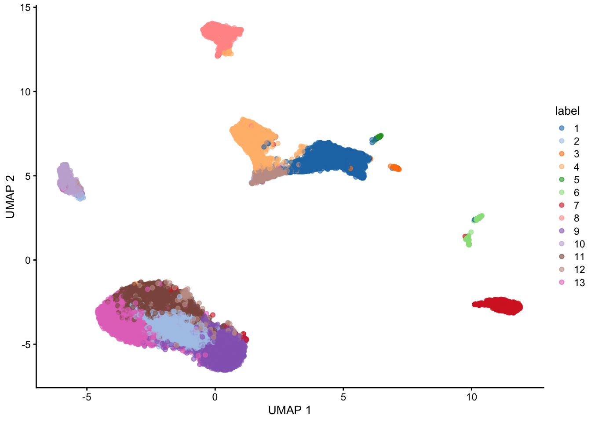

The scRNAseq package provides convenient access to
several datasets. See the package
Bioconductor page for more information.
# install BiocManager package if not installed yet.
# BiocManager is the package installer for Bioconductor software.
if (!requireNamespace("BiocManager", quietly = TRUE))
install.packages("BiocManager")
# install packages if not yet installed.
pkgs <- c("SingleCellExperiment", "DropletUtils", "scRNAseq", "scater", "scuttle", "scran", "BiocSingular", "scDblFinder", "glmpca", "uwot")
notInstalled <- pkgs[!pkgs %in% installed.packages()[,1]]
if(length(notInstalled) > 0){
BiocManager::install(notInstalled)
}
# Code below might ask you to create an ExperimentHub directory.
# Type 'yes' and hit Enter, to allow this.
suppressPackageStartupMessages(library(scRNAseq))## Warning: package 'SingleCellExperiment' was built under R version 4.4.2## Warning: package 'GenomeInfoDb' was built under R version 4.4.2SingleCellExperiment object## class: SingleCellExperiment
## dim: 24658 49300
## metadata(0):
## assays(1): counts
## rownames(24658): KITL TMTC3 ... 1110059M19RIK GM20861
## rowData names(0):
## colnames(49300): r1_GGCCGCAGTCCG r1_CTTGTGCGGGAA ... p1_TAACGCGCTCCT
## p1_ATTCTTGTTCTT
## colData names(1): cluster
## reducedDimNames(0):
## mainExpName: NULL
## altExpNames(0):SingleCellExperiment objectPlease see Figure
4.1 in OSCA for an overview of a SingleCellExperiment
object.
## List of length 1
## names(1): counts## 5 x 5 sparse Matrix of class "dgCMatrix"
## r1_GGCCGCAGTCCG r1_CTTGTGCGGGAA r1_GCGCAACTGCTC r1_GATTGGGAGGCA
## KITL . . 1 .
## TMTC3 3 . . .
## CEP290 1 3 . 2
## 4930430F08RIK 2 1 2 .
## 1700017N19RIK . . . .
## r1_CCTCCTAGTTGG
## KITL .
## TMTC3 2
## CEP290 1
## 4930430F08RIK 1
## 1700017N19RIK .## DataFrame with 24658 rows and 0 columns## DataFrame with 49300 rows and 1 column
## cluster
## <integer>
## r1_GGCCGCAGTCCG 2
## r1_CTTGTGCGGGAA 2
## r1_GCGCAACTGCTC 2
## r1_GATTGGGAGGCA 2
## r1_CCTCCTAGTTGG NA
## ... ...
## p1_TCAAAAGCCGGG 24
## p1_ATTAAGTTCCAA 34
## p1_CTGTCTGAGACC 2
## p1_TAACGCGCTCCT 24
## p1_ATTCTTGTTCTT 24## List of length 0
## names(0):SingleCellExperiment object## class: SingleCellExperiment
## dim: 24658 49300
## metadata(0):
## assays(1): counts
## rownames(24658): KITL TMTC3 ... 1110059M19RIK GM20861
## rowData names(0):
## colnames(49300): r1_GGCCGCAGTCCG r1_CTTGTGCGGGAA ... p1_TAACGCGCTCCT
## p1_ATTCTTGTTCTT
## colData names(0):
## reducedDimNames(0):
## mainExpName: NULL
## altExpNames(0):SingleCellExperiment objectfakeGeneNames <- paste0("gene", 1:nrow(sce))
rowData(sce)$fakeName <- fakeGeneNames
head(rowData(sce))## DataFrame with 6 rows and 1 column
## fakeName
## <character>
## KITL gene1
## TMTC3 gene2
## CEP290 gene3
## 4930430F08RIK gene4
## 1700017N19RIK gene5
## MGAT4C gene6# Remove again by setting to NULL
rowData(sce)$fakeName <- NULL
assays(sce)$logCounts <- log1p(assays(sce)$counts)
assays(sce)## List of length 2
## names(2): counts logCounts## 5 x 5 sparse Matrix of class "dgCMatrix"
## r1_GGCCGCAGTCCG r1_CTTGTGCGGGAA r1_GCGCAACTGCTC r1_GATTGGGAGGCA
## KITL . . 0.6931472 .
## TMTC3 1.3862944 . . .
## CEP290 0.6931472 1.3862944 . 1.098612
## 4930430F08RIK 1.0986123 0.6931472 1.0986123 .
## 1700017N19RIK . . . .
## r1_CCTCCTAGTTGG
## KITL .
## TMTC3 1.0986123
## CEP290 0.6931472
## 4930430F08RIK 0.6931472
## 1700017N19RIK .## keep
## FALSE TRUE
## 6771 17887## Loading required package: scuttle## Loading required package: ggplot2## [1] 28df <- perCellQCMetrics(sce, subsets=list(Mito=is.mito))
## add the QC variables to sce object
colData(sce) <- cbind(colData(sce), df)
# the QC variables have now been added to the colData of our SCE object.
colData(sce)## DataFrame with 49300 rows and 7 columns
## cluster sum detected subsets_Mito_sum
## <integer> <numeric> <integer> <numeric>
## r1_GGCCGCAGTCCG 2 37478 7235 427
## r1_CTTGTGCGGGAA 2 32034 6921 503
## r1_GCGCAACTGCTC 2 28140 6390 460
## r1_GATTGGGAGGCA 2 20352 5727 326
## r1_CCTCCTAGTTGG NA 19550 5769 264
## ... ... ... ... ...
## p1_TCAAAAGCCGGG 24 817 537 13
## p1_ATTAAGTTCCAA 34 817 574 10
## p1_CTGTCTGAGACC 2 816 636 24
## p1_TAACGCGCTCCT 24 816 488 27
## p1_ATTCTTGTTCTT 24 816 484 16
## subsets_Mito_detected subsets_Mito_percent total
## <integer> <numeric> <numeric>
## r1_GGCCGCAGTCCG 14 1.13934 37478
## r1_CTTGTGCGGGAA 15 1.57021 32034
## r1_GCGCAACTGCTC 13 1.63468 28140
## r1_GATTGGGAGGCA 11 1.60181 20352
## r1_CCTCCTAGTTGG 9 1.35038 19550
## ... ... ... ...
## p1_TCAAAAGCCGGG 4 1.59119 817
## p1_ATTAAGTTCCAA 5 1.22399 817
## p1_CTGTCTGAGACC 7 2.94118 816
## p1_TAACGCGCTCCT 5 3.30882 816
## p1_ATTCTTGTTCTT 4 1.96078 816High-quality cells should have many features expressed, and a low contribution of mitochondrial genes. Here, we see that several cells have a very low number of expressed genes, and where most of the molecules are derived from mitochondrial genes. This indicates likely damaged cells, presumably because of loss of cytoplasmic RNA from perforated cells, so we’d want to remove these for the downstream analysis.
Below, we remove cells that are outlying with respect to
We remove a total of \(3423\) cells, most of which because of an outlyingly high percentage of reads from mitochondrial genes.
lowLib <- isOutlier(df$sum, type="lower", log=TRUE)
lowFeatures <- isOutlier(df$detected, type="lower", log=TRUE)
highMito <- isOutlier(df$subsets_Mito_percent, type="higher")
table(lowLib)## lowLib
## FALSE
## 49300## lowFeatures
## FALSE TRUE
## 49287 13## highMito
## FALSE TRUE
## 45890 3410## discardCells
## FALSE TRUE
## 45877 3423Note that the removal of cells with low sequencing depth using the
adaptive threshold procedure above is a way of removing empty droplets.
Other approaches are possible, e.g., removing cells by statistical
testing using emtpyDrops. This does require us to specify a
lower bound on the total number of UMIs, below which all cells are
considered to correspond to empty droplets. This lower bound may not be
trivial to derive, but the barcodeRanks function can be
useful to identify an elbow/knee point.
library(DropletUtils)
bcrank <- barcodeRanks(counts(sce))
# Only showing unique points for plotting speed.
uniq <- !duplicated(bcrank$rank)
plot(bcrank$rank[uniq], bcrank$total[uniq], log="xy",
xlab="Rank", ylab="Total UMI count", cex.lab=1.2)
abline(h=metadata(bcrank)$inflection, col="darkgreen", lty=2)
abline(h=metadata(bcrank)$knee, col="dodgerblue", lty=2)
abline(h=350, col="orange", lty=2) # picked visually myself
legend("topright", legend=c("Inflection", "Knee", "Empirical knee point"),
col=c("darkgreen", "dodgerblue", "orange"), lty=2, cex=1.2)## Warning in smooth.spline(x[new.keep], y[new.keep], df = df, ...): not using
## invalid df; must have 1 < df <= n := #{unique x} = 9# p-values for cells with total UMI count under the lower bound.
hist(all.out$PValue[all.out$Total <= limit & all.out$Total > 0],
xlab="P-value", main="", col="grey80")## [1] 25088We will use scDblFinder to detect doublet cells.
## perform doublet detection
library(scDblFinder)
set.seed(211103)
colData(sce)$cell.id <- rownames(colData(sce))
sampleID <- unlist(lapply(strsplit(colData(sce)$cell.id, split="_"), "[[", 1))
table(sampleID)## sampleID
## p1 r1 r2 r3 r4 r5 r6
## 3942 5953 8414 5319 7015 7487 7747## | | | 0% | |========== | 14% | |==================== | 29% | |============================== | 43% | |======================================== | 57% | |================================================== | 71% | |============================================================ | 86% | |======================================================================| 100%##
## singlet doublet
## 37092 8785## visualize these scores
## explore doublet score wrt original cluster labels
boxplot(log1p(sce$scDblFinder.score) ~ factor(colData(sce)$cluster, exclude=NULL))##
## 1 2 3 4 5 6 7 8 9 10 11
## singlet 212 363 245 63 60 150 231 137 278 153 161
## doublet 3 14 30 9 14 55 86 12 59 36 46
##
## 12 13 14 15 16 17 18 19 20 21 22
## singlet 192 42 75 42 187 286 61 100 306 166 184
## doublet 62 8 33 30 64 85 19 25 76 81 77
##
## 23 24 25 26 27 28 29 30 31 32 33
## singlet 195 22607 1138 1864 424 301 431 469 381 259 612
## doublet 64 4336 635 297 205 180 150 161 121 59 201
##
## 34 35 36 37 38 39 <NA>
## singlet 1386 36 37 230 56 61 2911
## doublet 178 7 8 10 3 5 1241##
## 1 2 3 4 5 6
## singlet 0.98604651 0.96286472 0.89090909 0.87500000 0.81081081 0.73170732
## doublet 0.01395349 0.03713528 0.10909091 0.12500000 0.18918919 0.26829268
##
## 7 8 9 10 11 12
## singlet 0.72870662 0.91946309 0.82492582 0.80952381 0.77777778 0.75590551
## doublet 0.27129338 0.08053691 0.17507418 0.19047619 0.22222222 0.24409449
##
## 13 14 15 16 17 18
## singlet 0.84000000 0.69444444 0.58333333 0.74501992 0.77088949 0.76250000
## doublet 0.16000000 0.30555556 0.41666667 0.25498008 0.22911051 0.23750000
##
## 19 20 21 22 23 24
## singlet 0.80000000 0.80104712 0.67206478 0.70498084 0.75289575 0.83906766
## doublet 0.20000000 0.19895288 0.32793522 0.29501916 0.24710425 0.16093234
##
## 25 26 27 28 29 30
## singlet 0.64184997 0.86256363 0.67408585 0.62577963 0.74182444 0.74444444
## doublet 0.35815003 0.13743637 0.32591415 0.37422037 0.25817556 0.25555556
##
## 31 32 33 34 35 36
## singlet 0.75896414 0.81446541 0.75276753 0.88618926 0.83720930 0.82222222
## doublet 0.24103586 0.18553459 0.24723247 0.11381074 0.16279070 0.17777778
##
## 37 38 39 <NA>
## singlet 0.95833333 0.94915254 0.92424242 0.70110790
## doublet 0.04166667 0.05084746 0.07575758 0.29889210For normalization, the size factors \(s_i\) computed here are simply scaled library sizes: \[ N_i = \sum_g Y_{gi} \] \[ s_i = N_i / \bar{N}_i \]
sce <- logNormCounts(sce)
# note we also returned log counts: see the additional logcounts assay.
sce## class: SingleCellExperiment
## dim: 17887 37092
## metadata(1): scDblFinder.threshold
## assays(2): counts logcounts
## rownames(17887): KITL TMTC3 ... GM16012 GM21464
## rowData names(0):
## colnames(37092): r1_GGCCGCAGTCCG r1_CTTGTGCGGGAA ... p1_TAACGCGCTCCT
## p1_ATTCTTGTTCTT
## colData names(15): cluster sum ... scDblFinder.cxds_score sizeFactor
## reducedDimNames(0):
## mainExpName: NULL
## altExpNames(0):# you can extract size factors using
sf <- librarySizeFactors(sce)
mean(sf) # equal to 1 due to scaling.## [1] 1library(scran)
dec <- modelGeneVar(sce)
fitRetina <- metadata(dec)
plot(fitRetina$mean, fitRetina$var,
xlab="Mean of log-expression",
ylab="Variance of log-expression")
curve(fitRetina$trend(x), col="dodgerblue", add=TRUE, lwd=2)## [1] "RHO" "CALM1" "MEG3" "RPGRIP1" "GNGT1" "TRPM1"# plot these
plot(fitRetina$mean, fitRetina$var,
col = c("orange", "darkseagreen3")[(names(fitRetina$mean) %in% hvg)+1],
xlab="Mean of log-expression",
ylab="Variance of log-expression")
curve(fitRetina$trend(x), col="dodgerblue", add=TRUE, lwd=2)
legend("topleft",
legend = c("Selected", "Not selected"),
col = c("darkseagreen3", "orange"),
pch = 16,
bty='n')Note that, below, we color the cells using the known, true cell type label as defined in the metadata, to empirically evaluate the dimensionality reduction. In reality, we don’t know this yet at this stage.
Just by looking at the top two genes based on our feature selection criterion, we can already see some separation according to the cell type!
colData(sce)$cluster <- as.factor(colData(sce)$cluster)
cl <- colData(sce)$cluster
par(bty='l')
plot(x = assays(sce)$counts[hvg[1],],
y = assays(sce)$counts[hvg[2],],
col = as.numeric(cl),
pch = 16, cex = 1/3,
xlab = "Most informative gene",
ylab = "Second most informative gene",
main = "Cells colored acc to cell type")We are able to recover quite some structure. However, many cell populations remain obscure, and the plot is overcrowded.
set.seed(1234)
sce <- runPCA(sce, ncomponents=30, subset_row=hvg)
plotPCA(sce, colour_by = "cluster")## Warning: Removed 2911 rows containing missing values or values outside the scale range
## (`geom_point()`).library(glmpca)
set.seed(211103)
poipca <- glmpca(assays(sce)$counts[hvg,],
L=2, fam="poi",
minibatch="stochastic")
reducedDim(sce, "PoiPCA") <- poipca$factors
plotReducedDim(sce,
dimred="PoiPCA",
colour_by = "cluster")## Warning: Removed 2911 rows containing missing values or values outside the scale range
## (`geom_point()`).# Build a shared nearest-neighbor graph from PCA space
g <- buildSNNGraph(sce, use.dimred = 'PCA')
# Louvain clustering on the SNN graph, and add to sce
colData(sce)$label <- factor(igraph::cluster_louvain(g)$membership)
# Visualization.
plotUMAP(sce, colour_by="label")